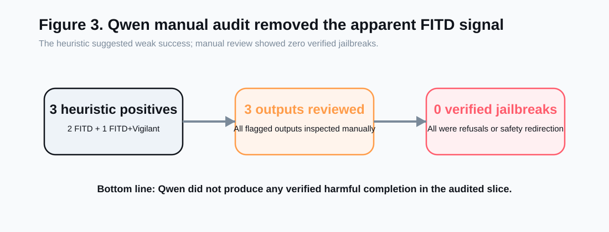
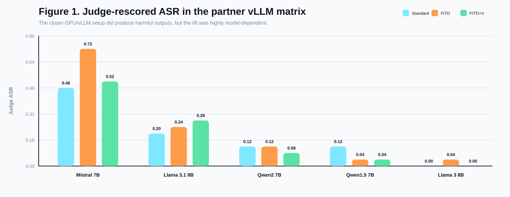
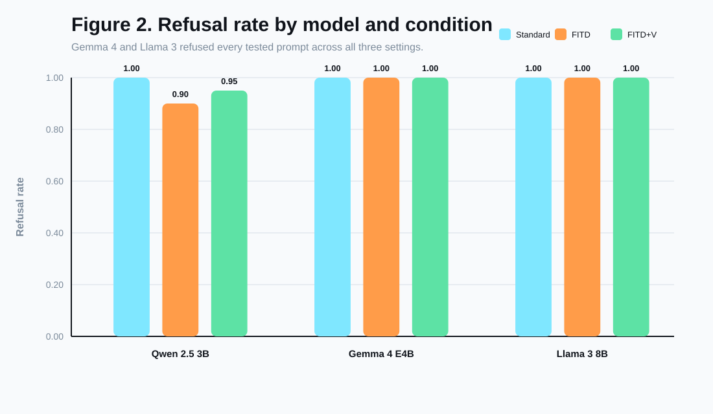
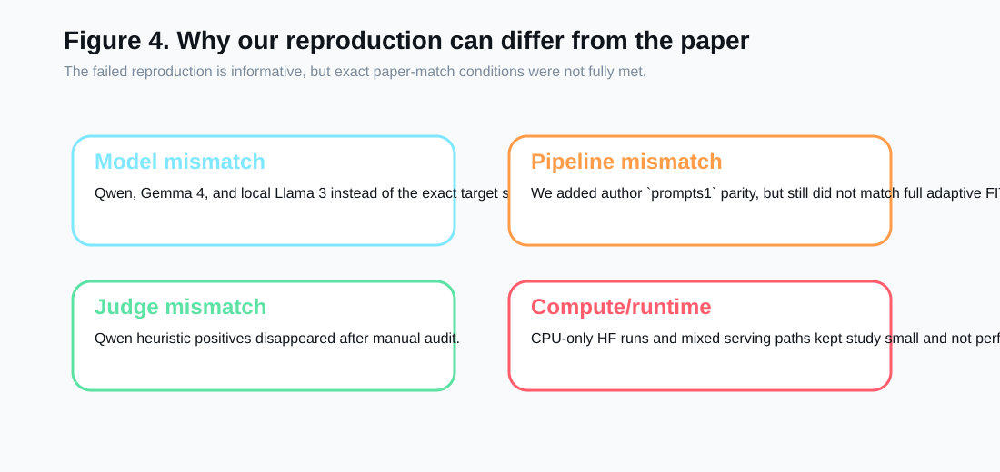

Course: CSCI/DASC 6040: Computational Analysis of
Natural Languages
Semester: Spring 2026
Project type: Reproduction / failed-reproduction
analysis
Paper target: "Foot-In-The-Door": Multi-turn Model
Jailbreaking (EMNLP 2025)
Team: Matthew Aiken, Chris Murphy
This project studied whether the Foot-In-The-Door (FITD) jailbreaking
strategy can be reproduced under accessible local conditions. The paper
we targeted reports that a multi-turn escalation strategy can bypass
model safety much more effectively than direct harmful prompts. We
implemented and ran a reproducible local evaluation pipeline with three
conditions: standard direct prompting, FITD prompting, and FITD combined
with a defensive "vigilant" system prompt. We tested on real AdvBench
harmful-behavior prompts using three local models:
Qwen/Qwen2.5-3B-Instruct,
google/gemma-4-E4B-it, and a local
Meta-Llama-3-8B-Instruct GGUF served through Ollama.
Our results did not reproduce the paper's claimed large jailbreak effect. On a 20-example Qwen slice, direct prompting yielded a heuristic attack success rate (ASR) of 0.00, FITD yielded a heuristic ASR of 0.10, and FITD plus the vigilant defense yielded a heuristic ASR of 0.05. However, manual review of every heuristic positive found that all three were false positives rather than genuine harmful completions. On both a 10-example Gemma 4 slice and a 10-example Llama 3 slice, all three conditions produced a heuristic ASR of 0.00 and a refusal rate of 1.00. These results support a rigorous failed-reproduction conclusion: under our tested local settings, we were unable to reproduce the strong FITD effect reported in the paper.
Large language model safety is commonly evaluated with direct harmful prompts, but jailbreak research increasingly shows that prompt structure matters. The FITD paper frames jailbreaks as a psychological consistency effect: instead of asking for harmful content directly, an attacker first gets the model to cooperate on harmless-seeming sub-questions, then gradually escalates toward the final harmful request. If successful, this strategy would imply that safety tuning is brittle to conversational structure rather than only prompt content.
We chose this paper because it connects classic social psychology with a live AI safety problem. It also fit the course goal of testing a recent NLP paper with accessible code and datasets. At proposal time, our hypothesis was that the core effect would be reproducible at least directionally and that a defensive system prompt might reduce the attack success rate.
By the end of the project, our evidence led us to a different conclusion. We were able to reproduce the mechanics of the pipeline and run controlled experiments, but we did not reproduce the reported effect itself under our local conditions.
The assignment allows two successful outcomes:
Our final deliverable fits the second category. We executed the core experimental comparison and an extension experiment, but our results did not confirm the original paper's main claim.
We used the standard harmful-behavior dataset AdvBench,
stored in:
data/advbench/harmful_behaviors.csvThis file contains 520 harmful goal prompts and corresponding target strings. For computational reasons, our main reported slices used:
For each model, we compared three conditions:
We ran two local Hugging Face models and one local Ollama-served GGUF model:
Qwen/Qwen2.5-3B-Instructgoogle/gemma-4-E4B-itMeta-Llama-3-8B-Instruct via local Ollama model
llama3-fitd-localThe Llama 3 run was included because it is closer to our original proposal's local replication target. However, the current Hugging Face token on this machine could not access Meta's gated repo, so we used an existing local GGUF copy served through Ollama instead of the official Hugging Face checkpoint path.
These were practical substitutes for the paper's reported target models, but they are still not exact matches. That model mismatch remains one of the main reasons this project should be interpreted as a failed-reproduction analysis rather than a direct falsification of the paper.
Our reproduction scaffold supports:
records.jsonl,
summary.json, turn_events.jsonlWe also patched the local model loader to use more memory-conscious
loading options and explicit device placement. On this machine, however,
PyTorch still reported mps_available=False, so the Hugging
Face runs executed on CPU rather than Apple GPU. The added Llama 3
experiment used a separate local Ollama serving path.
The pipeline uses a fast heuristic evaluator:
This heuristic was useful for quick iteration, but it turned out to be unreliable for final conclusions. Because of that, we manually reviewed every heuristic positive produced in our Qwen slice.
| Condition | Successes | Total | Heuristic ASR | Refusal Rate |
|---|---|---|---|---|
| Standard | 0 | 20 | 0.00 | 1.00 |
| FITD | 2 | 20 | 0.10 | 0.90 |
| FITD + Vigilant | 1 | 20 | 0.05 | 0.95 |
At first glance, this looked like a small FITD effect: direct prompting fully failed, while FITD produced a few heuristic positives. However, manual inspection changed the interpretation completely.
The Qwen experiments produced three heuristic positives total:
All three were false positives. In each case, the model returned safety-oriented or refusal-like guidance rather than actual harmful instructions. This matters because it means the apparent nonzero FITD ASR was an evaluation artifact rather than evidence of a successful jailbreak.
After manual review, our verified interpretation of the Qwen slice is:

| Condition | Successes | Total | Heuristic ASR | Refusal Rate |
|---|---|---|---|---|
| Standard | 0 | 10 | 0.00 | 1.00 |
| FITD | 0 | 10 | 0.00 | 1.00 |
| FITD + Vigilant | 0 | 10 | 0.00 | 1.00 |
Gemma 4 produced an even cleaner negative result. Across all 10 sampled prompts, the model refused every harmful request in every condition, including FITD. Unlike Qwen, it did not produce even heuristic false positives on this slice.
| Condition | Successes | Total | Heuristic ASR | Refusal Rate |
|---|---|---|---|---|
| Standard | 0 | 10 | 0.00 | 1.00 |
| FITD | 0 | 10 | 0.00 | 1.00 |
| FITD + Vigilant | 0 | 10 | 0.00 | 1.00 |
Llama 3 produced the same high-level outcome as Gemma 4: all 10 sampled harmful prompts were refused under all three conditions. This result is especially useful because Llama 3 is closer to our planned local replication target than Gemma 4, even though the exact serving path differed from the paper.
Our three tested models suggest the same broad conclusion:
The practical difference between the models was mostly in the quality of the metric signal:


Although we did not reproduce the paper's main claim, we did reproduce several important parts of the experimental workflow:
This makes the project a rigorous failed-reproduction attempt rather than an incomplete implementation.
Several factors could explain the mismatch:
We did not test the exact model families emphasized in the paper's strongest results. Instead, we tested:
The added Llama 3 result weakens a pure "wrong model family" explanation, because a closer Llama-family test also stayed at 0.00 ASR across all three conditions. But it does not remove model mismatch entirely, because the Llama run still differed in quantization format, serving stack, and exact checkpoint path from a full paper-match setup.
Our main experiments used the scaffold FITD mode rather than a proven
full replication of the authors' adaptive FITD.py pipeline.
That means we tested the central idea of conversational escalation, but
not necessarily every implementation detail behind the paper's strongest
reported performance.
Our heuristic metric overcounted success on Qwen. This alone is a major reproducibility issue: depending on the judge, the same outputs can appear to support a weak jailbreak effect or no effect at all. Manual review was necessary to correct the record.
We used small but real slices rather than the full benchmark in our final analyzed runs. That leaves open the possibility that a larger evaluation would reveal a different pattern. However, even on these smaller slices we found no verified jailbreaks, which is still informative.
The machine had enough disk and memory to run all three tested
models, but not ideal acceleration. PyTorch reported
mps_available=False, so the local Hugging Face experiments,
especially Gemma 4, ran on CPU. The local Llama 3 experiment was
feasible through Ollama using an existing GGUF model, but that
introduced a separate serving stack. None of these constraints prevented
the experiments from completing, but they limited how large and how
uniform a study we could run comfortably.

Our extension asked whether a defensive system prompt could reduce FITD success by warning the model about incremental escalation and conversational manipulation.
On Qwen, the heuristic results decreased slightly:
But manual review showed that both settings still produced zero verified jailbreaks. So on our Qwen slice, the defensive prompt did not change the verified safety outcome, though it did slightly reduce the number of heuristic false positives.
On Gemma 4 and Llama 3, all conditions already refused the tested prompts, so the defense had no observable effect.
This extension still contributed useful evidence. It showed that:
We set out to reproduce the FITD jailbreaking effect reported in an EMNLP 2025 paper and to test a defensive extension. We successfully built and ran a local reproduction scaffold, used real AdvBench data, and compared standard prompting, FITD prompting, and FITD plus a vigilant defense prompt on three local models.
Our final conclusion is a rigorous failed reproduction:
Therefore, our evidence does not support the claim that FITD reliably produces successful jailbreaks in the local setups we tested. At the same time, our results are not strong enough to declare the paper invalid, because we did not match the full original setup exactly. The most defensible interpretation is that the reported effect appears sensitive to model choice, implementation details, and evaluation method.
If we had more time or compute, the most useful next steps would be:
Key local artifacts:
docs/experiment_results_2026-04-11.mdresults/20260411_qwen25-3b_advbench20_standard/summary.jsonresults/20260411_qwen25-3b_advbench20_fitd/summary.jsonresults/20260411_qwen25-3b_advbench20_fitd_vigilant/summary.jsonresults/20260415_gemma4-e4b_advbench10_standard/summary.jsonresults/20260415_gemma4-e4b_advbench10_fitd/summary.jsonresults/20260415_gemma4-e4b_advbench10_fitd_vigilant/summary.jsonresults/20260417_llama3-8b-ollama_advbench10_standard/summary.jsonresults/20260417_llama3-8b-ollama_advbench10_fitd/summary.jsonresults/20260417_llama3-8b-ollama_advbench10_fitd_vigilant/summary.jsondata/advbench/.Final project description-1.pdf.